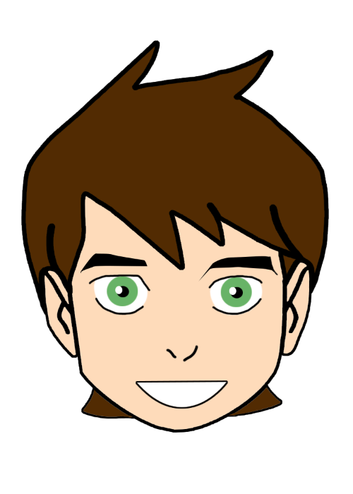
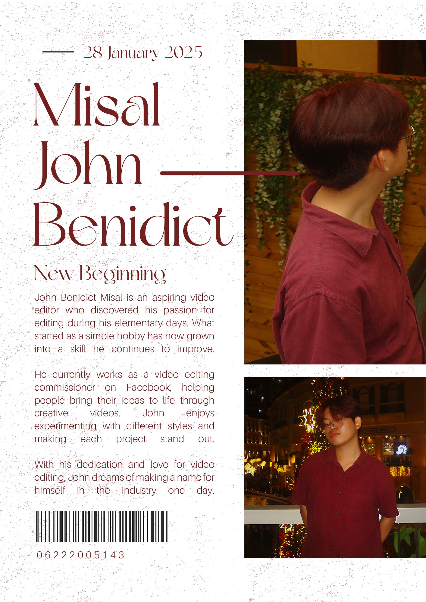

Projects
Where creativity meets canvas, turning dreams into timeless expressions.
Step into my creative world, where every piece tells a story beyond lines and colors. Though I may not be a traditional illustrator, art is not confined to a single form—it's an expression, a vision, a feeling brought to life. Here, I showcase the diverse creations that reflect my passion, proving that art is for everyone, regardless of skill or medium.
Photo
Explore a collection of stunning artworks that showcase creativity and passion.
Product Poster
This is a milk drink poster I created. It’s my first time designing a product poster, and it was a lot of fun!
Character Design 1
This is Tanjiro Kamado, a character I chose for our character design activity.

Character Design 2
This is Ben10, the character I drew in Photoshop for our hands-on activity in Character Design 2.
Typography Art
This is a typography art project from our Reading Visual Art activity, created using Adobe Illustrator.
Meal Poster
I created this comic-style poster for our Pathfit meal of the day task. It was really cool!

Self Poster
This was created to advertise ourselves as part of a hands-on activity in Multimedia, designed in Photoshop.
Pointilism Art
A pointillism artwork created digitally using Adobe Illustrator, focusing on precision and detail.
Videos
Watch creative process and visual storytelling through motion.
Wedding of Dianne and Jairus
Dianne and Jairus’ wedding was my first experience editing a wedding video as a freelancer. It presented several challenges, but ultimately proved to be rewarding. I made sure every special moment was captured perfectly. This project not only helped me improve my editing abilities but also boosted my confidence, pushing me to take on additional freelance assignments.
Lupang Sinilangan: A Documentary Film
Lupang Sinilangan is a documentary focusing on the issue of land pollution. We traveled to Pinalagad, also known as Tambakan ng Basura, a site overwhelmed by trash and disregard. Through interviews and on-location footage, we showcased the grim truth about how pollution harms both the environment and the local community.Fleeting Glimpses
Fleeting Glimpse is a story of friendship—one that was once strong but slowly faded with time. As life's challenges pulled them in different directions, their shared memories began to blur. In the end, they are left wondering if the bond they once had was real or just a fleeting moment lost to time.
Ang Binhi ng Kapayapaan
Ang Binhi ng Kapayapaan tells the story of a man who discovers a hidden garden, a peaceful sanctuary that holds the key to healing a chaotic town. In this secret garden, a group of passionate individuals has been secretly planning to restore balance and harmony to the community. As the man becomes involved, he learns that peace begins with small, deliberate actions, and the garden becomes a symbol of hope and transformation for the entire town.
A Day in My Life
A Day in My Life, as a BSIT Student at Pamantasan ng Lungsod ng Valenzuela gives an inside look into the daily routines and challenges faced by a student pursuing a degree in Information Technology. From early morning classes to late-night study sessions, every day is a mix of learning, problem-solving, and personal growth. The experience is not just about academic achievements but also about building connections preparing for the future in the world of technology.
Mathematical Logic
Mathematical Logic is a video lesson that delves into the foundational concepts of logic in mathematics. It covers key topics such as propositions, logical connectives, truth tables, and formal proofs, providing a clear understanding of how logic shapes mathematical reasoning. By the end of the lesson, viewers will have a solid grasp of how mathematical logic is applied in various fields, from computer science to philosophy.
Dado Banatao's Invetion
This video on Dado Banatao’s creation of the microchip examines his trailblazing impact on the tech world. It focuses on how Banatao, a Filipino-American engineer, was instrumental in developing the microchip that transformed computing. The video guides viewers through his journey, highlighting his groundbreaking designs, including the first-ever system logic chip that set the stage for today’s computer technology.
Introduction
The video is an introduction of myself, where I answer questions that are closely related to the subject of Ethics. I discuss my personal understanding of ethical principles and how they shape my decisions in both my personal and academic life. Throughout the video, I reflect on key ethical issues, sharing how I approach moral dilemmas and the values I hold most important.
Pathfit - Fitness Plan Exercise
Pathfit - Fitness Plan Exercise is about my week of following a structured fitness plan that I created for myself. Each day, I focused on different workouts designed to improve my strength, endurance, and flexibility. Throughout the week, I tracked my progress, noting improvements in both my physical capabilities and overall energy levels.